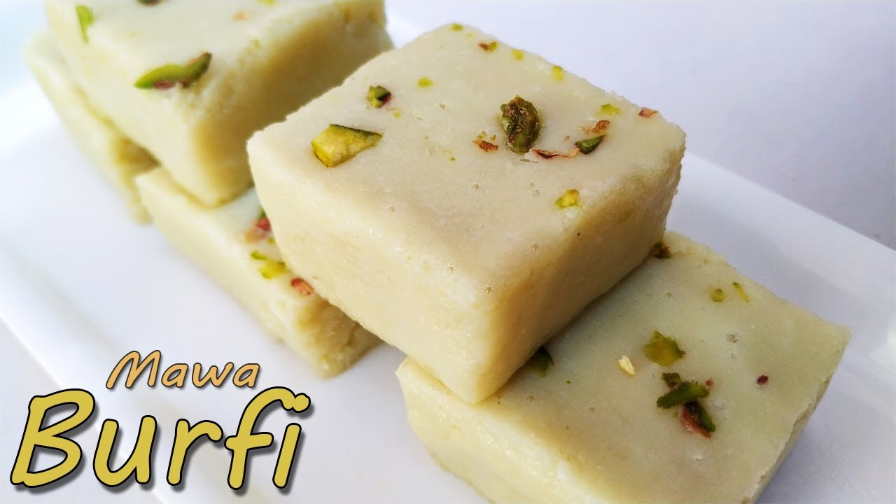

Gulab Jamun
Ingredients
- 3 cups kerrygold full cream milk powder
- 1 tsp ground elychee
- 4 cups flour
- 1 cup butter
- 1 cup water
- oil for deep frying
- 2 cups sugar
- 1/2 cup water
Syrup Ingredlents
Recipe
- class="recipeBox">
- Mix the butter , full cream milk powder, flour, elychee and water until a crumbly texture is formed
- Gather a bit of the mixture into your hand and squeeze firmly, forming an elongated ova
- Deep fry in hot oil until golden brown
- Drain
- Bring water ,sugar,to a boil unit thick
- Add the fried gulab jamun pieces into the sugar mixture in small batches.Coat evenly.
- Serve

Mava Mithia Recipe
Ingredients
For the Mava (Khoya)
- 1 litre full-fat milk
For the Mithia
- 250 grams mava (khoya)
- 1 cup powdered sugar
- 1/2 teaspoon cardamom powder
- 2 tablespoons chopped nuts (like almonds, cashews, and pistachios)
- 1 tablespoon ghee (clarified butter)
- Silver foil (optional for decoration)
Recipe
Making the Mava (Khoya)
- Boil the Milk: Pour the milk into a heavy-bottomed pan. Bring it to a boil over medium heat.
- Simmer and Reduce: Once the milk boils, reduce the heat to low and let it simmer. Stir continuously to prevent the milk from sticking to the bottom.
- Thicken the Milk: Continue cooking until the milk thickens and reduces to a solid mass. This process can take about 1-2 hours. The end product is called khoya or mava.
- Cool: Once done, let it cool down completely.
- Grate the Mava: Once the mava has cooled, grate or crumble it finely.
- Cook the Mava: In a non-stick pan, add the grated mava and cook on low heat for about 5-7 minutes. Stir continuously to avoid burning.
- Add Ghee and Sugar: Add the ghee to the pan and mix well. Then, add the powdered sugar and mix thoroughly.
- Add Flavors and Nuts: Add the cardamom powder and chopped nuts. Mix everything well and cook for another 2-3 minutes until everything is well combined.
- Shape the Mithai: Remove the mixture from heat and let it cool slightly. While it is still warm, take small portions and shape them into round balls or any shape you prefer.
- Decorate: You can decorate the mithai with silver foil if desired.
- Cool and Serve: Let the mithai cool completely before serving. Store in an airtight container.
Making the Mithia
